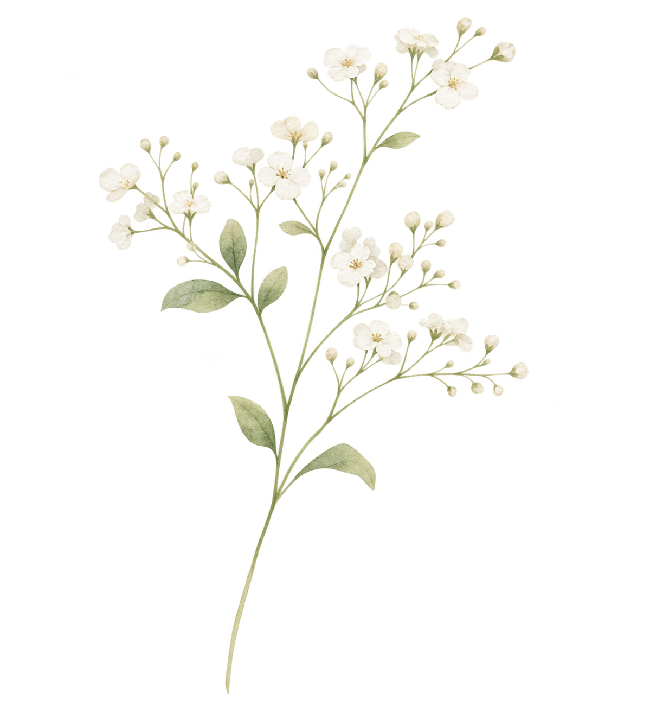

Há espaço para o seu tempo e para a sua jornada.
Uma perda gestacional ou neonatal pode trazer sentimentos difíceis de nomear. Aqui você encontra escuta, orientações cuidadosas e caminhos para buscar apoio, sem pressa e sem julgamentos.
Você pode viver esse momento no seu tempo.
Acolhimento e luto
Não existe uma forma certa de sentir ou um prazo para atravessar a perda.
Não existe uma maneira certa de viver o luto Sentimentos diferentes podem aparecer, desaparecer e voltar.
O que pode acontecer
Tristeza, raiva, culpa, alívio, vazio ou confusão podem coexistir. Algumas pessoas choram muito; outras ficam em silêncio ou seguem a rotina no automático.
O que pode ajudar
Respeitar seu próprio ritmo, reduzir cobranças e procurar pessoas que escutem sem julgar.
Para entender melhor
O luto não segue uma sequência fixa. Algumas pessoas precisam conversar; outras preferem silêncio. Respeitar o próprio ritmo não significa deixar de procurar ajuda quando o sofrimento fica insuportável.
Algumas pessoas querem conversar; outras precisam de silêncio ou de tempo. A intensidade do luto não mede o vínculo com o bebê, e não há prazo obrigatório para se sentir melhor.
O que dizer quando faltam palavras? Você não precisa explicar o que está sentindo.
Para você
Frases simples como “hoje não quero conversar” ou “preciso de companhia” são suficientes.
Para quem acompanha
Escutar, oferecer presença e evitar comparações ou tentativas de encontrar uma explicação para a perda.
Para entender melhor
Você pode dizer “não consigo falar sobre isso agora” ou pedir que uma pessoa de confiança comunique o ocorrido a familiares. Não existe obrigação de dar explicações.
É normal sentir culpa? A culpa pode surgir mesmo quando não há responsabilidade sua.
Entendendo o sentimento
Buscar respostas e revisitar acontecimentos é comum no luto. Sentir culpa não significa que você causou a perda.
Quando buscar ajuda
Se a culpa estiver persistente, intensa ou dificultar seu cotidiano, conversar com um profissional pode ajudar.
Para entender melhor
Muitas perdas acontecem por fatores que a pessoa não controla. Se desejar compreender possíveis causas, peça uma conversa com a equipe e pergunte quais informações realmente estão disponíveis.
Depois de uma perda, é comum procurar explicações e pensar no que poderia ter sido diferente. Muitas perdas gestacionais têm causas que não poderiam ter sido evitadas pela pessoa grávida; conversar com a equipe pode ajudar a compreender o que se sabe e o que permanece incerto.
Como lidar com datas e lembranças? Memórias e datas significativas podem despertar emoções.
Possibilidades
Você pode guardar lembranças, criar um pequeno ritual, escrever uma carta ou optar por não fazer nada agora.
Seu direito de escolher
Não há obrigação de guardar objetos, compartilhar a história ou participar de homenagens.
Para entender melhor
Algumas famílias guardam cartas, fotos ou objetos; outras preferem não fazê-lo. Escolha o que fizer sentido e saiba que essa decisão pode mudar com o tempo.
Cuidados no meu ritmo
Marque os itens que forem úteis para você. A lista é apenas uma ajuda para se organizar.
Se precisar, encontre caminhos de Apoio e informações na página Direitos .
Seu corpo e suas emoções merecem atenção.
Cuidados após a perda
As necessidades variam conforme o tipo de perda e os cuidados recebidos.
Quais cuidados físicos podem ser necessários? A orientação depende do momento da gestação e do atendimento realizado.
Acompanhamento
Peça à equipe de saúde orientações sobre recuperação, sangramento esperado, controle da dor e necessidade de retorno.
Atenção
Procure atendimento urgente diante de sangramento muito intenso, febre, dor forte ou piorando, desmaio, falta de ar ou secreção com odor desagradável.
Para entender melhor
A necessidade de exames, medicamentos ou procedimentos depende da idade gestacional e das circunstâncias da perda. Febre, dor forte, desmaio ou sangramento intenso exigem avaliação urgente.
Mesmo após uma perda, o corpo pode precisar de acompanhamento para avaliar sangramento, dor, recuperação uterina e outras necessidades. Febre, sangramento muito intenso, desmaio ou dor forte são motivos para procurar atendimento imediatamente.
O que acontece com a produção de leite? Em algumas perdas, pode ocorrer descida do leite.
Converse com a equipe
Existem medidas para aliviar desconforto e, em determinadas situações, opções de tratamento. A conduta deve ser individualizada.
Procure avaliação
Vermelhidão importante, febre ou dor intensa nas mamas precisam de avaliação de saúde.
Para entender melhor
Após algumas perdas pode ocorrer produção de leite, com desconforto e sensibilidade. Não utilize medicamentos ou métodos para interromper a lactação sem orientação profissional.
A produção de leite pode acontecer mesmo após uma perda, e isso pode ser fisicamente desconfortável e emocionalmente difícil. A equipe pode orientar medidas de conforto e avaliar condutas seguras de acordo com cada situação.
Como cuidar da saúde emocional? Acolhimento psicológico pode ser útil em qualquer etapa.
Apoio possível
Você pode buscar atendimento na atenção primária do SUS, em serviços de saúde mental ou com profissional de sua confiança.
Sinais de atenção
Sofrimento intenso que não diminui, isolamento extremo, impossibilidade de realizar cuidados básicos ou pensamentos de se machucar merecem ajuda profissional imediata.
Para entender melhor
Apoio psicológico pode ser útil mesmo quando a pessoa não sabe nomear o que sente. Procure ajuda se o sofrimento estiver impedindo alimentação, sono ou atividades essenciais.
O acompanhamento psicológico pode ser útil, mas não precisa seguir um único formato. Você pode pedir acolhimento individual, com a família ou com pessoas de confiança, e mudar de ideia sobre o que deseja compartilhar.
E se eu precisar de informações sobre o que aconteceu? É legítimo querer compreender — ou não querer falar disso agora.
Na consulta
Você pode pedir explicações em linguagem clara sobre exames, hipóteses, condutas e acompanhamento.
No seu ritmo
Anote dúvidas ou leve uma pessoa de confiança. Você pode pedir uma conversa em outro momento, se possível.
Para entender melhor
Peça que expliquem os resultados disponíveis e o que permanece incerto. Nem sempre é possível determinar a causa de uma perda, e isso não deve ser apresentado como culpa da família.
O luto também acontece nas relações.
Família e rede de apoio
Cada pessoa pode viver a perda de um jeito diferente, inclusive dentro da mesma família.
Como pedir apoio sem precisar explicar tudo? Pedidos concretos podem facilitar o cuidado.
Exemplos
“Você pode ficar comigo hoje?”, “Pode me acompanhar à consulta?” ou “Preciso de ajuda com as tarefas de casa”.
Limites
Também é válido pedir silêncio, privacidade ou um tempo sem visitas.
Para entender melhor
Você pode pedir ajuda com compras, alimentação, tarefas de casa ou deslocamentos. Também é válido pedir privacidade e menos mensagens por um período.
E quando as pessoas dizem coisas que machucam? Comentários bem-intencionados também podem doer.
Você pode responder
“Prefiro não ouvir comparações”, “Não quero falar sobre uma próxima gravidez agora” ou “Preciso que você apenas me escute”.
Para a rede
Evite frases que minimizem a perda. Pergunte o que a pessoa precisa, sem exigir respostas.
Para entender melhor
Comentários como “você pode tentar de novo” podem causar dor. Se desejar, responda: “Preciso que você apenas me escute, sem tentar resolver”.
Como acolher parceiros e familiares? O sofrimento não é necessariamente igual para todos.
Escuta
Abrir espaço para sentimentos diferentes pode reduzir mal-entendidos.
Cuidado compartilhado
Se houver dificuldades de comunicação, uma conversa mediada por profissional pode ser útil.
Para entender melhor
Cada pessoa pode reagir de maneira diferente. Evite exigir que o outro sinta ou demonstre o luto do mesmo modo. Apoio mútuo e conversas respeitosas podem ajudar.
Como falar com crianças sobre a perda? Palavras simples e verdadeiras costumam ajudar.
Uma conversa possível
Use explicações adequadas à idade, sem metáforas confusas como “foi dormir”, e permita perguntas.
Acolhimento
Reforce que a criança não causou a perda e que adultos continuarão cuidando dela.
Para entender melhor
Use palavras simples e verdadeiras, adequadas à idade, evitando explicações que possam confundir. Permita perguntas e procure apoio especializado se necessário.
Você não precisa decidir tudo hoje.
Direitos e caminhos de ajuda
Há serviços de acolhimento e informações que podem ser solicitadas conforme sua situação.
Posso pedir atendimento respeitoso e privacidade? O cuidado deve preservar sua dignidade e suas escolhas.
No serviço de saúde
Você pode solicitar explicações claras, privacidade, respeito à sua história e orientação sobre os próximos passos.
Se não se sentir acolhida
É possível buscar a ouvidoria do serviço e, no SUS, os canais de ouvidoria disponíveis na sua região.
Para entender melhor
Você pode pedir um ambiente reservado, explicações cuidadosas e respeito às suas decisões. A equipe deve considerar necessidades culturais, familiares e emocionais.
Você pode solicitar explicações claras, privacidade e cuidado sensível ao luto. Se quiser, pergunte sobre possibilidades de despedida, lembranças e encaminhamento para apoio, respeitando suas escolhas e as regras do serviço.
Há direitos específicos após perda gestacional ou neonatal? Algumas proteções dependem do contexto e da legislação aplicável.
Orientação individual
Questões de afastamento do trabalho, registro, documentação e procedimentos hospitalares podem variar conforme a situação.
Onde confirmar
Peça orientação ao serviço de saúde, à assistência social ou a um serviço de orientação jurídica, como a Defensoria Pública.
Para entender melhor
As regras dependem do tipo de perda, idade gestacional e vínculo de trabalho. Consulte a página Direitos e os serviços oficiais para informações atualizadas sobre documentação e benefícios.
Onde posso encontrar apoio psicológico? Você pode começar pela unidade de saúde mais próxima.
Pelo SUS
Uma UBS pode orientar sobre acolhimento e encaminhamento conforme as necessidades e a rede local.
Outras possibilidades
Profissionais de psicologia, grupos de apoio ao luto e serviços comunitários também podem oferecer escuta.
Para entender melhor
A UBS pode orientar sobre o cuidado em saúde mental e encaminhamentos disponíveis. A pessoa pode solicitar acolhimento mesmo meses depois da perda.
E se eu estiver em uma crise emocional? Buscar ajuda imediatamente é um ato de cuidado.
Se houver risco imediato
No Brasil, procure um serviço de urgência ou ligue para o SAMU 192.
Para conversar
O CVV oferece apoio emocional gratuito pelo telefone 188 e em cvv.org.br. Em risco imediato, não espere por atendimento online.
Para entender melhor
Se houver risco de autolesão ou incapacidade de manter-se segura, procure urgência imediatamente. No Brasil, o SAMU é 192 e o CVV, 188, oferece escuta emocional.
ORIENTAÇÃO E ACOLHIMENTO
Fontes e serviços úteis
As informações são educativas, com foco no contexto brasileiro, e não substituem avaliação profissional. Para orientações atualizadas, consulte:
- Ministério da Saúde — rede SUS e cuidados em saúde.
- Centro de Valorização da Vida (CVV) — escuta emocional pelo 188.
- Ouvidoria-Geral do SUS — informações sobre manifestações relacionadas ao atendimento.
Se houver risco imediato à saúde ou à segurança no Brasil: procure uma emergência ou ligue para o SAMU 192.